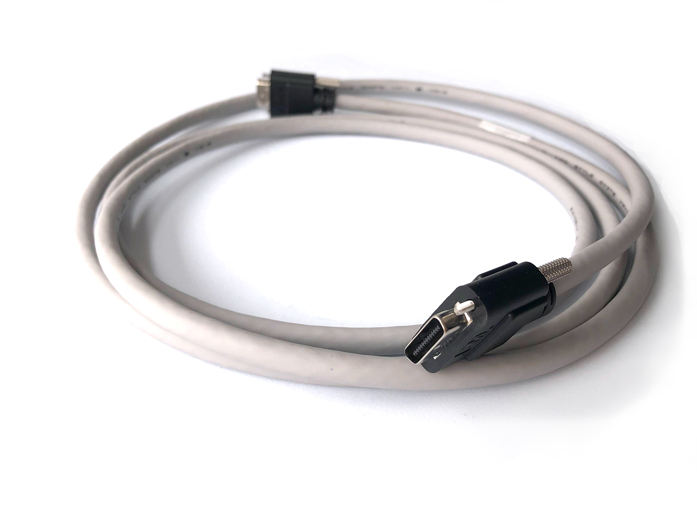
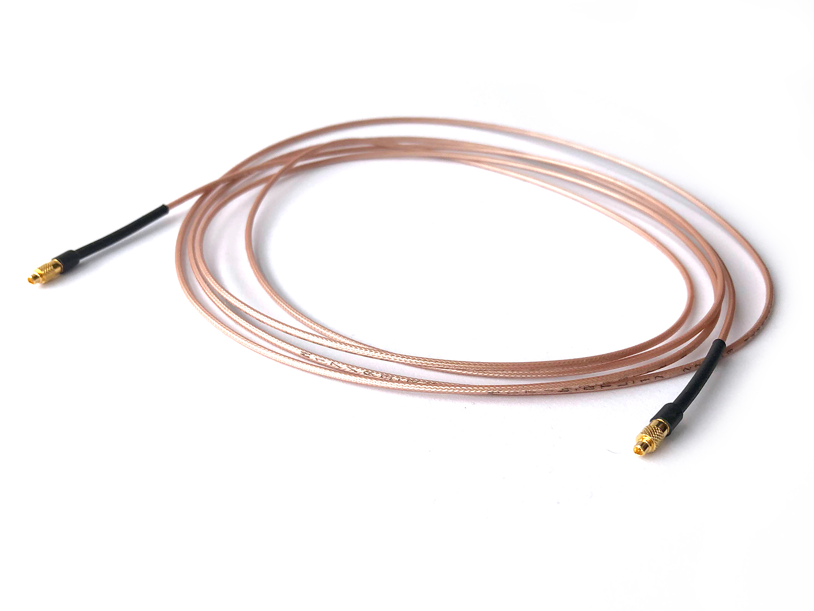

Breakout Board Guide#
Warning
Always make sure the PC is powered off before connecting or disconnecting the Breakout Board. Neglecting to do this will damage the PCIe Host.
Setup#
The Breakout Board provides access to signals to and from the PCIe host. Each PCIe host is connected to a breakout board using the following connections:
Digital and analog I/O (Required for breakout board operation): A single shrunk delta ribbon (SDR) cable is used for all auxiliary IO and provide power to the Breakout Board.
Headstage links (Required for headstages): A single MMCX coaxial cable is used for each headstage port.
High speed clocks (Optional): A single MMCX caoxial cable is used for each clock signal
HARP (Optional): A 3.5mm audio jack
Configuration (Optional): Micro USB used to update the breakout gateware.
{kind=link}
{kind=link}
Refer to the PCIe Host documentation for a detailed description of how each of these signal lines are acquired.
Note
There may be more IO present on the breakout board than is available on a particular host board. For instance, PCIe Host has two coaxial links, but the breakout board provides four. This is is by design. The breakout is designed to be compatible with future host hardware.
SDR Cable#
Plug in the SDR cable for analog and digital I/O.
{kind=link}
Use the SDR to SDR 26 POS cable to connect the Breakout Board to the PCIe host board.
Though one end of this cable is marked with ‘camera’, the cable is symmetrical for our purposes, so it can be connected in either direction.
The Breakout Board will power on soon after the SDR cable connected to an active host
Attention
Some boards have a bug in the power on sequence that means a reset is required before the board will work. This has been fixed in later revisions. If the RGB LEDs remain off after plugging in the SDR cable, reset the Breakout Board by inserting a thin wire or screw driver into the small hole just below the ‘Digital Out’ marking to reset the onboard FPGA.
MMCX Cables#
Plug in MMCX coaxial connections for headstage ports and clock signals.
{kind=link}
Use the MMCX to MMCX cable to connect a headstage port on the PCIe Host to the breakout board. A single cable is required for each headstage port.
Make sure that port letter (A, B, C, D) on the breakout matches the port letter on the PCIe host.
Additional MMCX cables can be used to connect the optional clock IO ports on the PCIe host board to the clock ports on the breakout board. These are passive, 50-ohm transmission lines so the order does not matter.
Warning
The MMCX connectors can be damaged if they are removed improperly. See this link for information on how to connect and remove MMCX cables without damaging the connector.
LEDs#
RGB LEDs indicate various port states, signal directions, digital signals, and acquisition states, etc. The following diagrams provide definitions for each LED color on the breakout board.
{kind=link}
Indication LED legend. Half-filled circles indicate a flashing LED. An error status on a headstage port indicates a loss of lock during acquisition. The headstage connection must be re-established and acquisition restarted.#
{kind=link}
Gateware#
The breakout board contains a TinyFPGA BX (Lattice ICE40 breakout board) for digital input serialization, digital output deserialization, interpreting user input, and driving indication LEDs. The breakout board gateware is impelemented using an open-source toolchain (Yosys and NextPnR).
Updating the Gateware#
If Open Ephys team have provided you with an updated firmware file for the Breakout Board, the micro-USB port on the Breakout Board (labelled ‘config’) can be used to update the firmware on the board.
Todo
Link and instructions